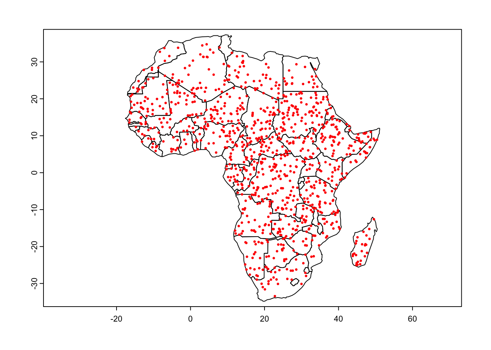
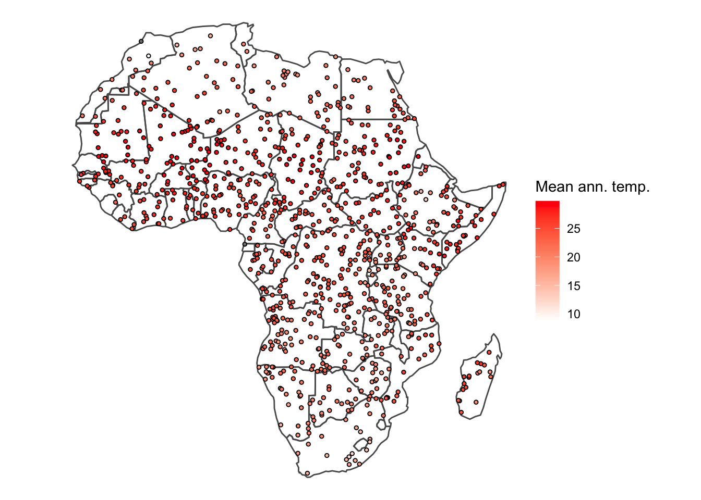
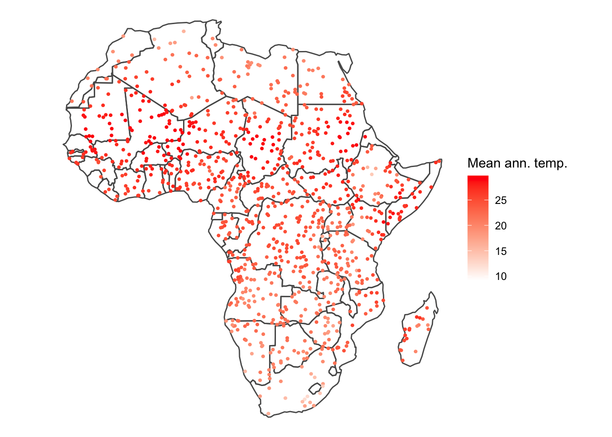
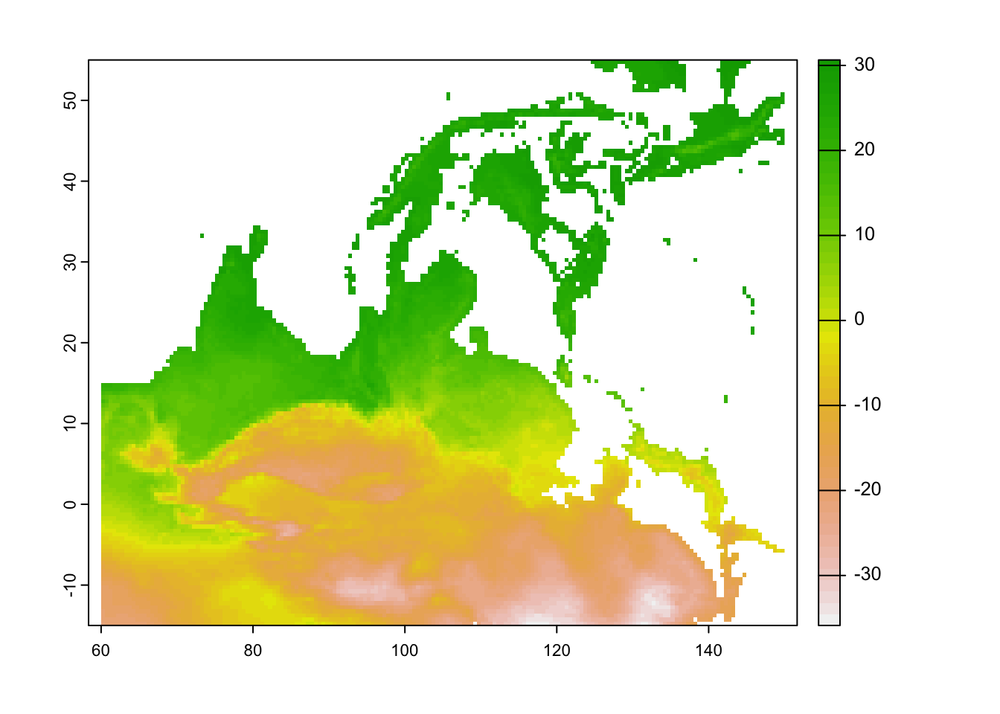

Extras
Introduction
Tutorial 1: extracting raster data by vectors
Learning objectives
- To extract environmental data using points or polygons
#### Libraries
library(terra)## terra 1.5.21library(sf)## Linking to GEOS 3.10.2, GDAL 3.4.2, PROJ 8.2.1; sf_use_s2() is TRUElibrary(tidyverse)## ── Attaching packages ─────────────────────────────────────── tidyverse 1.3.1 ──## ✔ ggplot2 3.3.6 ✔ purrr 0.3.4
## ✔ tibble 3.1.7 ✔ dplyr 1.0.9
## ✔ tidyr 1.2.0 ✔ stringr 1.4.0
## ✔ readr 2.1.2 ✔ forcats 0.5.1## ── Conflicts ────────────────────────────────────────── tidyverse_conflicts() ──
## ✖ ggplot2::arrow() masks terra::arrow()
## ✖ tidyr::extract() masks terra::extract()
## ✖ dplyr::filter() masks stats::filter()
## ✖ dplyr::lag() masks stats::lag()
## ✖ dplyr::src() masks terra::src()library(rnaturalearth)Load in environmental data
# Load in worldclim data
worldclim <- rast('data/sdm/worldclim.tif')
# Subset the data to the first 6 variables just to make the example run faster
wc <- worldclim[[1:6]]
# check the variables
names(wc)## [1] "bio1" "bio2" "bio3" "bio4" "bio5" "bio6"Extract using polygon data
# load in a country borders for Africa from online
# you could load in your own shapefile here
afr <- vect(ne_countries(continent = 'Africa', returnclass = 'sf'))
head(afr)## scalerank featurecla labelrank sovereignt sov_a3 adm0_dif
## 1 1 Admin-0 country 3 Angola AGO 0
## 2 1 Admin-0 country 6 Burundi BDI 0
## 3 1 Admin-0 country 5 Benin BEN 0
## 4 1 Admin-0 country 3 Burkina Faso BFA 0
## 5 1 Admin-0 country 4 Botswana BWA 0
## 6 1 Admin-0 country 4 Central African Republic CAF 0
## level type admin adm0_a3 geou_dif
## 1 2 Sovereign country Angola AGO 0
## 2 2 Sovereign country Burundi BDI 0
## 3 2 Sovereign country Benin BEN 0
## 4 2 Sovereign country Burkina Faso BFA 0
## 5 2 Sovereign country Botswana BWA 0
## 6 2 Sovereign country Central African Republic CAF 0
## geounit gu_a3 su_dif subunit su_a3 brk_diff
## 1 Angola AGO 0 Angola AGO 0
## 2 Burundi BDI 0 Burundi BDI 0
## 3 Benin BEN 0 Benin BEN 0
## 4 Burkina Faso BFA 0 Burkina Faso BFA 0
## 5 Botswana BWA 0 Botswana BWA 0
## 6 Central African Republic CAF 0 Central African Republic CAF 0
## name name_long brk_a3 brk_name
## 1 Angola Angola AGO Angola
## 2 Burundi Burundi BDI Burundi
## 3 Benin Benin BEN Benin
## 4 Burkina Faso Burkina Faso BFA Burkina Faso
## 5 Botswana Botswana BWA Botswana
## 6 Central African Rep. Central African Republic CAF Central African Rep.
## brk_group abbrev postal formal_en formal_fr note_adm0
## 1 <NA> Ang. AO People's Republic of Angola <NA> <NA>
## 2 <NA> Bur. BI Republic of Burundi <NA> <NA>
## 3 <NA> Benin BJ Republic of Benin <NA> <NA>
## 4 <NA> B.F. BF Burkina Faso <NA> <NA>
## 5 <NA> Bwa. BW Republic of Botswana <NA> <NA>
## 6 <NA> C.A.R. CF Central African Republic <NA> <NA>
## note_brk name_sort name_alt mapcolor7 mapcolor8 mapcolor9
## 1 <NA> Angola <NA> 3 2 6
## 2 <NA> Burundi <NA> 2 2 5
## 3 <NA> Benin <NA> 1 2 2
## 4 <NA> Burkina Faso <NA> 2 1 5
## 5 <NA> Botswana <NA> 6 5 7
## 6 <NA> Central African Republic <NA> 5 6 6
## mapcolor13 pop_est gdp_md_est pop_year lastcensus gdp_year
## 1 1 12799293 110300 NA 1970 NA
## 2 8 8988091 3102 NA 2008 NA
## 3 12 8791832 12830 NA 2002 NA
## 4 11 15746232 17820 NA 2006 NA
## 5 3 1990876 27060 NA 2011 NA
## 6 9 4511488 3198 NA 2003 NA
## economy income_grp wikipedia fips_10 iso_a2
## 1 7. Least developed region 3. Upper middle income NA <NA> AO
## 2 7. Least developed region 5. Low income NA <NA> BI
## 3 7. Least developed region 5. Low income NA <NA> BJ
## 4 7. Least developed region 5. Low income NA <NA> BF
## 5 6. Developing region 3. Upper middle income NA <NA> BW
## 6 7. Least developed region 5. Low income NA <NA> CF
## iso_a3 iso_n3 un_a3 wb_a2 wb_a3 woe_id adm0_a3_is adm0_a3_us adm0_a3_un
## 1 AGO 024 024 AO AGO NA AGO AGO NA
## 2 BDI 108 108 BI BDI NA BDI BDI NA
## 3 BEN 204 204 BJ BEN NA BEN BEN NA
## 4 BFA 854 854 BF BFA NA BFA BFA NA
## 5 BWA 072 072 BW BWA NA BWA BWA NA
## 6 CAF 140 140 CF CAF NA CAF CAF NA
## adm0_a3_wb continent region_un subregion region_wb name_len
## 1 NA Africa Africa Middle Africa Sub-Saharan Africa 6
## 2 NA Africa Africa Eastern Africa Sub-Saharan Africa 7
## 3 NA Africa Africa Western Africa Sub-Saharan Africa 5
## 4 NA Africa Africa Western Africa Sub-Saharan Africa 12
## 5 NA Africa Africa Southern Africa Sub-Saharan Africa 8
## 6 NA Africa Africa Middle Africa Sub-Saharan Africa 20
## long_len abbrev_len tiny homepart
## 1 6 4 NA 1
## 2 7 4 NA 1
## 3 5 5 NA 1
## 4 12 4 NA 1
## 5 8 4 NA 1
## 6 24 6 NA 1# there are lots of variables, let's keep only the country nameafr <- afr[,'name']
plot(afr)
# Check projections and reproject if needed
crs(afr) == crs(wc)## [1] FALSEafr_prj <- project(afr, wc)
crs(afr_prj) == crs(wc)## [1] TRUE# Crop & mask the worldclim layer to the Africa layer
wc_mask <- mask(crop(wc, afr_prj), afr_prj)
plot(wc_mask)# Create a custom function to summarise the environmental raster data for each country
my_summary <- function(x) c(mean = mean(x, na.rm = T), min = min(x, na.rm=T), max = max(x, na.rm=T))# Use terra::extract() to get multiple summary values
poly_ext <- terra::extract(wc_mask, afr_prj, fun = my_summary)
head(poly_ext)## ID bio1.mean bio1.min bio1.max bio2.mean bio2.min bio2.max bio3.mean bio3.min
## 1 1 216.2583 156 278 138.0433 57 181 64.26773 45
## 2 2 197.4545 145 252 112.8864 98 128 75.64286 67
## 3 3 271.9550 254 290 122.8809 60 135 66.16558 57
## 4 4 280.7006 259 296 134.7982 114 153 60.65496 56
## 5 5 208.3562 181 229 162.6505 136 187 55.61516 52
## 6 6 248.9161 219 273 134.7801 105 184 68.16462 60
## bio3.max bio4.mean bio4.min bio4.max bio5.mean bio5.min bio5.max bio6.mean
## 1 78 1854.9078 304 3473 310.3173 236 353 95.92559
## 2 83 522.9026 260 986 271.8604 208 323 123.16234
## 3 74 1680.9477 1072 2492 370.7444 316 402 184.51416
## 4 66 2212.0712 1415 3382 388.2218 357 413 167.03235
## 5 59 4293.2937 3157 5824 332.7458 295 358 42.63357
## 6 81 1107.1877 490 2413 346.8247 302 397 148.28986
## bio6.min bio6.max
## 1 39 203
## 2 72 186
## 3 157 230
## 4 137 198
## 5 6 78
## 6 98 187# Bind the result back on to the polygons
afr_ext <- cbind(afr_prj, poly_ext)# Convert the data to an sf object for plotting
afr_ext_sf <- afr_ext %>% st_as_sf()
# Plot
ggplot() +
geom_sf(data = afr_ext_sf, aes(fill = bio1.mean/10)) +
scale_fill_gradientn(colours = c('white', 'red'),
name = 'Mean ann. temp.') +
theme_void()Extract using point data
# Create 1000 random points over Africa
rand_pts <- terra::spatSample(x = afr, size = 1000, method = "random")
plot(afr)
points(rand_pts, cex = 0.5, col = 'red')
# Check projection
crs(rand_pts) == crs(wc)## [1] FALSErand_pts <- project(rand_pts, wc)
crs(rand_pts) == crs(wc)## [1] TRUE# Write points to file and then read back in
writeVector(rand_pts, 'data/extraction_example/random_points.shp')# Save as a data frame in csv format
xy <- terra::geom(rand_pts, df = TRUE)[,c(1,3:4)]
write_csv(xy, 'data/extraction_example/random_points.csv')If you have your own point data, this is how you can read it into R
# Read points back in
# 1: as a shapefile
rand_pts <- vect('data/extraction_example/random_points.shp')
head(rand_pts)## name
## 1 Ethiopia
## 2 Libya
## 3 Morocco
## 4 Dem. Rep. Congo
## 5 Dem. Rep. Congo
## 6 Mali# 2: as a csv
rand_pts_df <- read_csv('data/extraction_example/random_points.csv')## Rows: 1000 Columns: 3
## ── Column specification ────────────────────────────────────────────────────────
## Delimiter: ","
## dbl (3): geom, x, y
##
## ℹ Use `spec()` to retrieve the full column specification for this data.
## ℹ Specify the column types or set `show_col_types = FALSE` to quiet this message.rand_pts <- vect(rand_pts_df, geom = c('x','y'), crs = crs(wc))
head(rand_pts)## geom
## 1 1
## 2 2
## 3 3
## 4 4
## 5 5
## 6 6So that’s a few different ways to create or load in your point data in different formats, let’s now run the extraction:
# Extract data for points
# We don't need to specify a function, because these are just points and will extract data for one cell that they intersect with
pts_ext <- terra::extract(wc, rand_pts)
head(pts_ext)## ID bio1 bio2 bio3 bio4 bio5 bio6
## 1 1 265 134 64 2274 355 148
## 2 2 262 157 48 5733 440 113
## 3 3 233 94 72 984 294 164
## 4 4 247 144 69 1074 348 140
## 5 5 283 143 56 3838 406 152
## 6 6 231 118 60 2250 326 130rand_pts_ext <- cbind(rand_pts, pts_ext)# Convert to sf for plotting
rand_pts_ext_sf <- rand_pts_ext %>% st_as_sf()
afr_sf <- afr %>% st_as_sf()
# Plot
ggplot() +
geom_sf(data = afr_sf, fill = NA) +
geom_sf(data = rand_pts_ext_sf, aes(fill = bio1/10), pch = 21, size = 1) +
scale_fill_gradientn(colours = c('white', 'red'),
name = 'Mean ann. temp.') +
theme_void()
Extract using buffer around points
# Buffers are essentially polygons, so this will work in a very similar way to our first example.
buf_pts <- buffer(rand_pts, width = 10000) # 10km buffer
plot(afr)
plot(buf_pts, add = T)We can use the same my_summary function as earlier
because these are also polygons with multiple raster tiles intersecting
with them. We therefore need to calculate summary values.
buf_ext <- terra::extract(wc, buf_pts, fun = my_summary)## Warning in min(x, na.rm = T): no non-missing arguments to min; returning Inf## Warning in max(x, na.rm = T): no non-missing arguments to max; returning -Inf## Warning in min(x, na.rm = T): no non-missing arguments to min; returning Inf## Warning in max(x, na.rm = T): no non-missing arguments to max; returning -Inf## Warning in min(x, na.rm = T): no non-missing arguments to min; returning Inf## Warning in max(x, na.rm = T): no non-missing arguments to max; returning -Inf## Warning in min(x, na.rm = T): no non-missing arguments to min; returning Inf## Warning in max(x, na.rm = T): no non-missing arguments to max; returning -Inf## Warning in min(x, na.rm = T): no non-missing arguments to min; returning Inf## Warning in max(x, na.rm = T): no non-missing arguments to max; returning -Inf## Warning in min(x, na.rm = T): no non-missing arguments to min; returning Inf## Warning in max(x, na.rm = T): no non-missing arguments to max; returning -Inf## Warning in min(x, na.rm = T): no non-missing arguments to min; returning Inf## Warning in max(x, na.rm = T): no non-missing arguments to max; returning -Inf## Warning in min(x, na.rm = T): no non-missing arguments to min; returning Inf## Warning in max(x, na.rm = T): no non-missing arguments to max; returning -Inf## Warning in min(x, na.rm = T): no non-missing arguments to min; returning Inf## Warning in max(x, na.rm = T): no non-missing arguments to max; returning -Inf## Warning in min(x, na.rm = T): no non-missing arguments to min; returning Inf## Warning in max(x, na.rm = T): no non-missing arguments to max; returning -Inf## Warning in min(x, na.rm = T): no non-missing arguments to min; returning Inf## Warning in max(x, na.rm = T): no non-missing arguments to max; returning -Inf## Warning in min(x, na.rm = T): no non-missing arguments to min; returning Inf## Warning in max(x, na.rm = T): no non-missing arguments to max; returning -Inf## Warning in min(x, na.rm = T): no non-missing arguments to min; returning Inf## Warning in max(x, na.rm = T): no non-missing arguments to max; returning -Inf## Warning in min(x, na.rm = T): no non-missing arguments to min; returning Inf## Warning in max(x, na.rm = T): no non-missing arguments to max; returning -Inf## Warning in min(x, na.rm = T): no non-missing arguments to min; returning Inf## Warning in max(x, na.rm = T): no non-missing arguments to max; returning -Inf## Warning in min(x, na.rm = T): no non-missing arguments to min; returning Inf## Warning in max(x, na.rm = T): no non-missing arguments to max; returning -Inf## Warning in min(x, na.rm = T): no non-missing arguments to min; returning Inf## Warning in max(x, na.rm = T): no non-missing arguments to max; returning -Inf## Warning in min(x, na.rm = T): no non-missing arguments to min; returning Inf## Warning in max(x, na.rm = T): no non-missing arguments to max; returning -Inf# warnings() produced due to some points falling in the ocean I presume...
buf_pts_ext <- cbind(buf_pts, buf_ext)# Convert to sf for plotting
buf_pts_ext_sf <- buf_pts_ext %>% st_as_sf()
# Plot
ggplot() +
geom_sf(data = afr_sf, fill = NA) +
geom_sf(data = buf_pts_ext_sf, aes(col = bio1.mean/10), pch = 1, size = 1) +
scale_colour_gradientn(colours = c('white', 'red'),
name = 'Mean ann. temp.') +
theme_void()
Tutorial 2: loading in netCDF files
netCDF downloaded from: http://aphrodite.st.hirosaki-u.ac.jp/products.html
Learning objectives
- To load in a netCDF (.nc) file
#### Load packages ----
library(terra)
library(tidyverse)
library(lubridate)##
## Attaching package: 'lubridate'## The following objects are masked from 'package:terra':
##
## intersect, union## The following objects are masked from 'package:base':
##
## date, intersect, setdiff, unionlibrary(magick)## Linking to ImageMagick 6.9.12.3
## Enabled features: cairo, fontconfig, freetype, heic, lcms, pango, raw, rsvg, webp
## Disabled features: fftw, ghostscript, x11library(gganimate)##
## Attaching package: 'gganimate'## The following object is masked from 'package:terra':
##
## animateLoad in netCDF using terra::rast()
#### Load netCDF file ----
ma_temp_2015 <- rast('data/netCDF_example/APHRO_MA_TAVE_050deg_V1808.2015.nc')## Warning: [rast] unknown extentma_temp_2015 <- ma_temp_2015[[366:730]]
names(ma_temp_2015)## [1] "tave_1" "tave_2" "tave_3" "tave_4" "tave_5" "tave_6"
## [7] "tave_7" "tave_8" "tave_9" "tave_10" "tave_11" "tave_12"
## [13] "tave_13" "tave_14" "tave_15" "tave_16" "tave_17" "tave_18"
## [19] "tave_19" "tave_20" "tave_21" "tave_22" "tave_23" "tave_24"
## [25] "tave_25" "tave_26" "tave_27" "tave_28" "tave_29" "tave_30"
## [31] "tave_31" "tave_32" "tave_33" "tave_34" "tave_35" "tave_36"
## [37] "tave_37" "tave_38" "tave_39" "tave_40" "tave_41" "tave_42"
## [43] "tave_43" "tave_44" "tave_45" "tave_46" "tave_47" "tave_48"
## [49] "tave_49" "tave_50" "tave_51" "tave_52" "tave_53" "tave_54"
## [55] "tave_55" "tave_56" "tave_57" "tave_58" "tave_59" "tave_60"
## [61] "tave_61" "tave_62" "tave_63" "tave_64" "tave_65" "tave_66"
## [67] "tave_67" "tave_68" "tave_69" "tave_70" "tave_71" "tave_72"
## [73] "tave_73" "tave_74" "tave_75" "tave_76" "tave_77" "tave_78"
## [79] "tave_79" "tave_80" "tave_81" "tave_82" "tave_83" "tave_84"
## [85] "tave_85" "tave_86" "tave_87" "tave_88" "tave_89" "tave_90"
## [91] "tave_91" "tave_92" "tave_93" "tave_94" "tave_95" "tave_96"
## [97] "tave_97" "tave_98" "tave_99" "tave_100" "tave_101" "tave_102"
## [103] "tave_103" "tave_104" "tave_105" "tave_106" "tave_107" "tave_108"
## [109] "tave_109" "tave_110" "tave_111" "tave_112" "tave_113" "tave_114"
## [115] "tave_115" "tave_116" "tave_117" "tave_118" "tave_119" "tave_120"
## [121] "tave_121" "tave_122" "tave_123" "tave_124" "tave_125" "tave_126"
## [127] "tave_127" "tave_128" "tave_129" "tave_130" "tave_131" "tave_132"
## [133] "tave_133" "tave_134" "tave_135" "tave_136" "tave_137" "tave_138"
## [139] "tave_139" "tave_140" "tave_141" "tave_142" "tave_143" "tave_144"
## [145] "tave_145" "tave_146" "tave_147" "tave_148" "tave_149" "tave_150"
## [151] "tave_151" "tave_152" "tave_153" "tave_154" "tave_155" "tave_156"
## [157] "tave_157" "tave_158" "tave_159" "tave_160" "tave_161" "tave_162"
## [163] "tave_163" "tave_164" "tave_165" "tave_166" "tave_167" "tave_168"
## [169] "tave_169" "tave_170" "tave_171" "tave_172" "tave_173" "tave_174"
## [175] "tave_175" "tave_176" "tave_177" "tave_178" "tave_179" "tave_180"
## [181] "tave_181" "tave_182" "tave_183" "tave_184" "tave_185" "tave_186"
## [187] "tave_187" "tave_188" "tave_189" "tave_190" "tave_191" "tave_192"
## [193] "tave_193" "tave_194" "tave_195" "tave_196" "tave_197" "tave_198"
## [199] "tave_199" "tave_200" "tave_201" "tave_202" "tave_203" "tave_204"
## [205] "tave_205" "tave_206" "tave_207" "tave_208" "tave_209" "tave_210"
## [211] "tave_211" "tave_212" "tave_213" "tave_214" "tave_215" "tave_216"
## [217] "tave_217" "tave_218" "tave_219" "tave_220" "tave_221" "tave_222"
## [223] "tave_223" "tave_224" "tave_225" "tave_226" "tave_227" "tave_228"
## [229] "tave_229" "tave_230" "tave_231" "tave_232" "tave_233" "tave_234"
## [235] "tave_235" "tave_236" "tave_237" "tave_238" "tave_239" "tave_240"
## [241] "tave_241" "tave_242" "tave_243" "tave_244" "tave_245" "tave_246"
## [247] "tave_247" "tave_248" "tave_249" "tave_250" "tave_251" "tave_252"
## [253] "tave_253" "tave_254" "tave_255" "tave_256" "tave_257" "tave_258"
## [259] "tave_259" "tave_260" "tave_261" "tave_262" "tave_263" "tave_264"
## [265] "tave_265" "tave_266" "tave_267" "tave_268" "tave_269" "tave_270"
## [271] "tave_271" "tave_272" "tave_273" "tave_274" "tave_275" "tave_276"
## [277] "tave_277" "tave_278" "tave_279" "tave_280" "tave_281" "tave_282"
## [283] "tave_283" "tave_284" "tave_285" "tave_286" "tave_287" "tave_288"
## [289] "tave_289" "tave_290" "tave_291" "tave_292" "tave_293" "tave_294"
## [295] "tave_295" "tave_296" "tave_297" "tave_298" "tave_299" "tave_300"
## [301] "tave_301" "tave_302" "tave_303" "tave_304" "tave_305" "tave_306"
## [307] "tave_307" "tave_308" "tave_309" "tave_310" "tave_311" "tave_312"
## [313] "tave_313" "tave_314" "tave_315" "tave_316" "tave_317" "tave_318"
## [319] "tave_319" "tave_320" "tave_321" "tave_322" "tave_323" "tave_324"
## [325] "tave_325" "tave_326" "tave_327" "tave_328" "tave_329" "tave_330"
## [331] "tave_331" "tave_332" "tave_333" "tave_334" "tave_335" "tave_336"
## [337] "tave_337" "tave_338" "tave_339" "tave_340" "tave_341" "tave_342"
## [343] "tave_343" "tave_344" "tave_345" "tave_346" "tave_347" "tave_348"
## [349] "tave_349" "tave_350" "tave_351" "tave_352" "tave_353" "tave_354"
## [355] "tave_355" "tave_356" "tave_357" "tave_358" "tave_359" "tave_360"
## [361] "tave_361" "tave_362" "tave_363" "tave_364" "tave_365"# warning provided for no extent, so we will need to assign this manually from the metadata
ext(ma_temp_2015)## SpatExtent : 0, 1, 0, 1 (xmin, xmax, ymin, ymax)ma_temp_2015 <- set.ext(ma_temp_2015, c(60, 150, -15, 55))
ext(ma_temp_2015)## SpatExtent : 60, 150, -15, 55 (xmin, xmax, ymin, ymax)# Plot a single raster
plot(ma_temp_2015[[1]])
# This looks upside down!
# We can use flip to turn this the correct way around
ma_temp_2015_flip <- flip(ma_temp_2015)
# Plot the flipped raster
plot(ma_temp_2015_flip[[1]])Your netCDF file is now ready to analyse!
A short bonus section below to animate the data:
#### Let's convert it to a data frame to animate
# Convert it to a data frame and pivot to a long df
ma_temp_2015_flip_df <- as.data.frame(ma_temp_2015_flip, xy = T) %>% pivot_longer(cols = 3:ncol(.), names_to = 'doy', values_to = 'daily_temp')# Extrate the date from the raster names
ma_temp_2015_flip_df$doy <- gsub('tave_', '', ma_temp_2015_flip_df$doy)
ma_temp_2015_flip_df$date <- as_date(as.numeric(ma_temp_2015_flip_df$doy), origin = '2014-12-31')#### Map animation
anim_map <- ggplot(ma_temp_2015_flip_df) +
geom_tile(aes(x = x, y = y, fill = daily_temp, col = daily_temp)) +
scale_fill_gradient2(low = 'blue', mid = 'white', high = 'red') +
scale_colour_gradient2(low = 'blue', mid = 'white', high = 'red') +
theme_void() +
labs(title = "{frame_time}") +
gganimate::transition_time(date)# Render the plot
gganimate::animate(anim_map, fps = 15,
width = 720, height = 480,
res = 150,
renderer = gifski_renderer("output/figs/netCDF_example/netCDF_example.gif"))